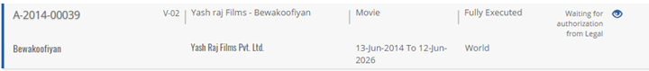
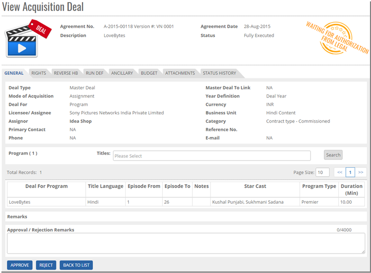
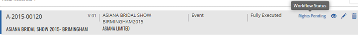


	<section>
		<article>
			<h2>Send For Approval<span></span></h2>
			<div>
				<p></p>
				<p>If the workflow is not defined in 'System Setting' then acquisition deal won't get this option. But if any workflow is defined then user will get this option for every acquisition deal after deal is created.</p>

				<p>Select any deal which you want to send for approval and click on button <b>Send for Approval</b> then confirmation message appears as "Are you sure, you want to send for Approval this Deal?" with OK and Cancel button, Click <b>OK</b>.</p>  

				<p>Record will be sent for approval in the system and an alert message will be shown as "Record Sent for Approval successfully". </p>

				<p>Click <b>Cancel</b>, Record will not be sent for Authorization.</p>

				<div class="triangle-border top">				
					
				</div>

				<p>Once Record is Sent for approval then the Status will show as "<b>Waiting for authorization from Legal</b>". This means that user can not expoit the rights without approval from Legal.

				<p><b>Note:</b> Authorized Person can Approve/Reject the Acquisition Deal.</p>

				<p>If the workflow is not defined then user can directly approve the deal by clicking on 'Approve' button on the selection of acquisition deal. </p>

				<p><b>Approving/Rejecting Acquisition Deal</b></p>

				<p>Approval List Tab show list of acquisition deal which are sent for approval i.e. waiting for approval. This list will only be available to user who has the rights to Approve/Reject Deals.</p>

				<p>Click on 'Approval List' tab and select any Acquisition Deal. Workflow Status is waiting for authorization from Legal. </p>

				<p>Approve/Reject page should be open with all fields in view mode and at the end of the page APPROVE, REJECT and BACK TO LIST button will be displayed.</p>

				<div class="triangle-border top">				
					
				</div>

				<p>Click Approve button. </p>

				<p>A confirmation message will appear as "Are you sure, you want to Approve this deal?" with OK and CANCEL buttons. Click OK and an alert will be displayed as deal approved. Approval status should be "Approved".</p>

				<p>Similarly, Click Reject button. </p>

				<p>A confirmation message will appear as "Are you sure, you want to Reject?" with OK and CANCELbuttons. Click OK and an alert will be displayed as deal rejected.</p>

				<p>Approval status should be "Declined ". System will show View, Edit and Re-Send for Approval Button.</p>

				<p><b>Delete Acquisition Deal</b></p>

				<p>User can delete only those deals which are not approved. That means user can delete deals whose status is either Rights/Cost Pending or Details added. Select required deal which you want to delete and click on <b>Trash Icon</b>.</p>

				<div class="triangle-border top">				
					
				</div>

				<p>It gives an alert message are you sure, you want to delete this record with OK and CANCEL buttons. By clicking on OK button the deal will be deleted permanently and clicking on CANCEL will cancel the delete operation. </p>
			</div>
		</article>
	</section>